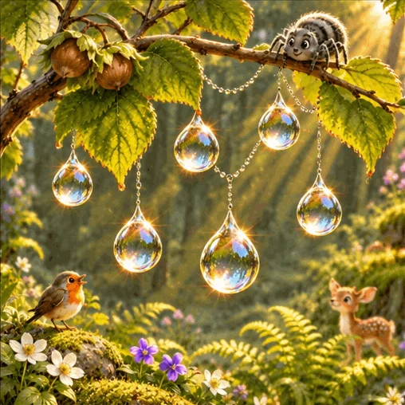
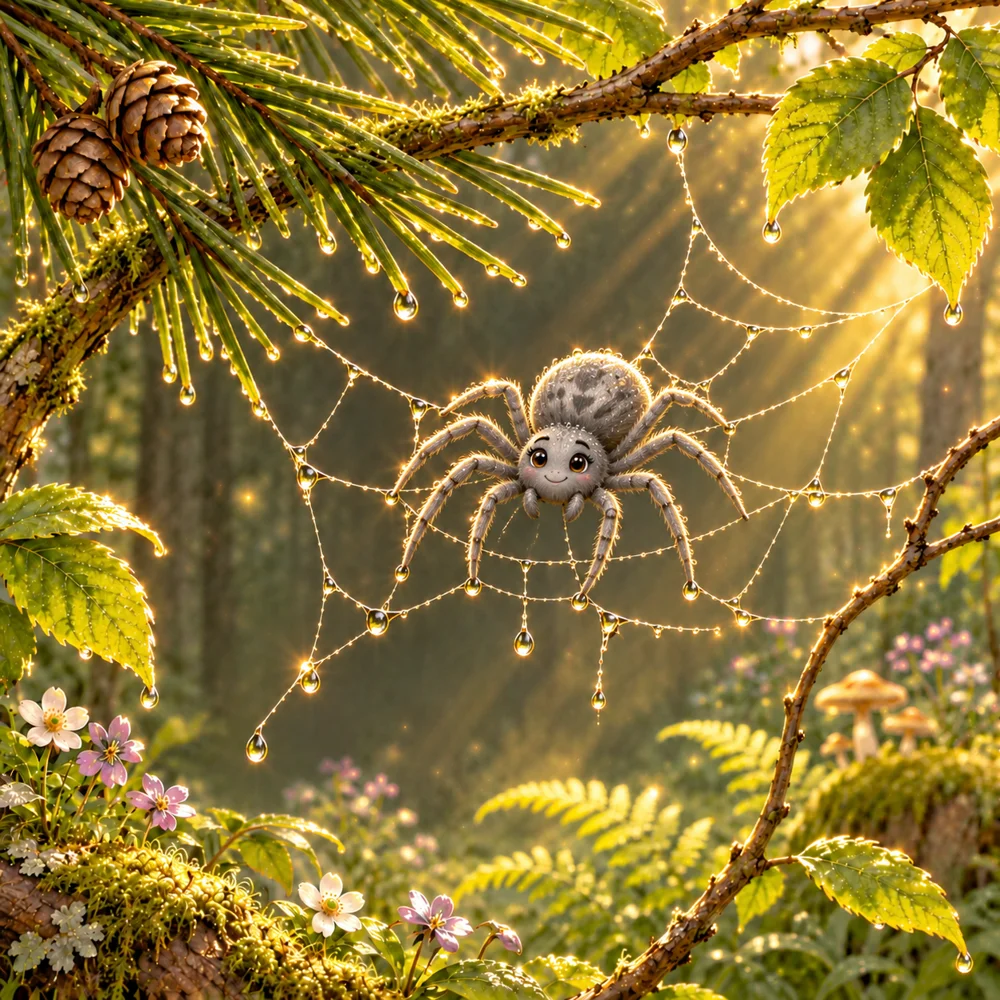

Szene 11
Der Zauber geht vorbei

Die Sonne stieg höher, und alle Tropfen fielen herunter.
Am Ende sah man nur noch ein graues, dünnes Spinnennetz mit einer dicken Spinne und einer kleinen Fliege.
„Und jetzt?“, fragte der König, aber Elin sagte nichts dazu.
Buchstaben-Zauber
Ziehe die Buchstaben auf die Striche. Du kannst auch erst einen Buchstaben und dann einen Strich antippen.
Zum Lesetext
Der Zauber ist vorbei.
